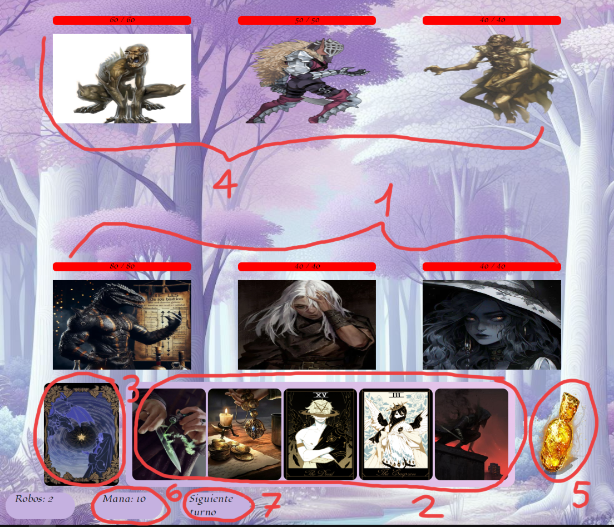

En un mundo donde humanos y criaturas fantásticas coexistían pacíficamente, la armonía se vio
amenazada
cuando un
ser maligno, conocido como el Señor Oscuro, sembró la discordia entre ambos grupos. Con su
habilidad
para
manipular mentes y crear ilusiones, convenció a algunos humanos de que las criaturas
fantásticas eran
una
amenaza
para su dominio.
La paranoia y el miedo se extendieron rápidamente entre los humanos, mientras que las
criaturas
fantásticas,
desconcertadas por el repentino cambio en la actitud de sus antiguos aliados, se vieron
obligadas a
defenderse. Lo
que comenzó como pequeños enfrentamientos pronto se convirtió en una guerra a gran escala.
Entre los humanos y las criaturas fantásticas que se resistían al engaño del Señor Oscuro,
surgieron
valientes
héroes que luchaban por la paz y la reconciliación.Tendrán que pasar por lugares peligrosos
y combatir
contra
monstruos esbirros del señor oscuro y llegar hasta él para poder vencerlo y así librar al
mundo de maldad.
Querido heroe:
Espero que esta carta te encuentre en buen estado de salud y con ánimo para enfrentar los
desafíos que se
avecinan. Me dirijo a ti con un corazón pesado y una mente llena de preocupaciones, pues
nuestro pacífico pueblo
está siendo amenazado por un mal antiguo que ha despertado de su letargo.
Un ser malvado, cuyo nombre se susurra con temor en los rincones más oscuros de nuestras
tierras, ha comenzado una
campaña de conquista que se extiende por todo el reino. Sus ejércitos de criaturas
monstruosas y seguidores
fanáticos avanzan sin piedad, sembrando caos y destrucción a su paso.
He escuchado historias de tus valientes hazañas y de tu coraje inquebrantable en la lucha
contra los monstruos.
Le rogamos que nos ayude,toda nuestra gente está muriendo y no sabemos que hacer.
Te esperamos con esperanza en nuestros corazones y una fe inquebrantable en que, con tu
ayuda, podremos poner fin
a esta oscuridad que nos consume.
Que los dioses te guíen y te protejan en tu viaje hacia nosotros.
Lightest Dungeon es un juego de fantaisa tipo RPG (Role-Playing Game) en el que escoges a tus
personajes que tienen sus propias razas y clases con sus estadisticas y realizas combates por turnos
contra enemigos
usando cartas de habilidades y cada personaje tiene las suyas propias en base a su clase y pueden
realizar efectos como de ataque
,curar o incluso recuperar maná que te ayuda a usar mas habilidades.Tendras que saber bien cual,como
y cuando utilizarlas para poder ganar.

Aqui te mostraremos cada parte de lo que te vas a encontrar en la pantalla del juego cuando empieces
Como cualquier otro juego de rol,cada personaje jugable tienen sus estadisticas destacables que identifican a cada clase:
Segun la clase,algunos de sus atributos pueden ser mas altos que otros.Por ejemplo las clases de guerrero o pícaro se centran mas en hacer la mayor cantidad de daño posible pero tienen baja defensa y los clérigos o tanque hacer daño no es su prioridad sino dar beneficios a su equipo y absorver el daño que reciben.Los atributos que sean 5 o mas,dan un buff positivo a las habilidades correspondientes mientras que si son menores que 5 dan un buff negativo.Estos son los porcentajes:
| Nivel | Porcentaje |
|---|---|
| 1 | -40% |
| 2 | -30% |
| 3 | -20% |
| 4 | -10% |
| 5 | 0% |
| 6 | +10% |
| 7 | +20% |
| 8 | +30% |
| 9 | +40% |
| 10 | +50% |
aaaaaaaaaaaaaaaaaaaaaaaaaaaaaaaaaaaaa aaaaaaaaaaaaaaaaaaaaaaaaaaaaaaaaaaaaa aaaaaaaaaaaaaaaaaaaaaaaaaaaaaaaaaaaaa aaaaaaaaaaaaaaaaaaaaaaaaaaaaaaaaaaaaa aaaaaaaaaaaaaaaaaaaaaaaaaaaaaaaaaaaaa aaaaaaaaaaaaaaaaaaaaaaaaaaaaaaaaaaaaa aaaaaaaaaaaaaaaaaaaaaaaaaaaaaaaaaaaaa aaaaaaaaaaaaaaaaaaaaaaaaaaaaaaaaaaaaa aaaaaaaaaaaaaaaaaaaaaaaaaaaaaaaaaaaaa aaaaaaaaaaaaaaaaaaaaaaaaaaaaaaaaaaaaa aaaaaaaaaaaaaaaaaaaaaaaaaaaaaaaaaaaaa aaaaaaaaaaaaaaaaaaaaaaaaaaaaaaaaaaaaa aaaaaaaaaaaaaaaaaaaaaaaaaaaaaaaaaaaaa aaaaaaaaaaaaaaaaaaaaaaaaaaaaaaaaaaaaa aaaaaaaaaaaaaaaaaaaaaaaaaaaaaaaaaaaaa aaaaaaaaaaaaaaaaaaaaaaaaaaaaaaaaaaaaa